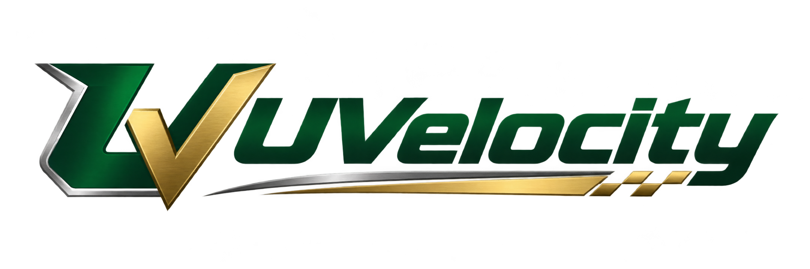

Dirancang untuk dinikmati.
UVelocity memadukan garasi 3D, 15 kendaraan, tiga sirkuit, dan balapan online. Model, tekstur, pencahayaan, serta suara mesin dirender pada perangkat Anda.
Model 3D
Geometri kendaraan Supercar, Classic Coupe, Muscle Car, dan Rally Car dibuat oleh Tevy, dirilis dengan lisensi CC0 1.0. Nama Veloce R, Apex GT, Cinder V8, dan Kaze Rally merupakan nama di dalam permainan; statistiknya merupakan pengaturan arcade.
Model mobil tambahan · CC BY 4.0
Lamborghini Aventador oleh BlackCube, varian aero karbon. Nissan Skyline R34 GT-R oleh Lexyc16. Kedua model menggunakan lisensi Creative Commons Attribution 4.0 International.
Perubahan: tekstur dioptimalkan, skala dan arah disesuaikan, geometri roda asli dipisahkan menjadi empat roda beranimasi, serta cat dan lampu disesuaikan untuk permainan. Aero karbon Aventador mempertahankan teksturnya. Nama merek mengidentifikasi kendaraan; permainan ini tidak berafiliasi dengan atau didukung produsen maupun pembuat model. Statistik kendaraan adalah pengaturan arcade.
Subaru BRZ & Bugatti Veyron
Subaru BRZ 2022 oleh mixmamo.studio, melalui konversi publik Ridgeline. 2011 Bugatti Veyron Super Sport oleh Galaxy Car Showroom. Kedua model berlisensi CC BY 4.0.
Penyesuaian BRZ: geometri dioptimalkan dengan mempertahankan normal dan UV, tekstur diperkecil, serta cat dan roda disiapkan untuk permainan. Penyesuaian Veyron: geometri roda asli dipisahkan, bagian cat dikenali, dan material dioptimalkan. Livery POLICE/77, lightbar, serta strobo merah-biru ditambahkan untuk varian fiktif Polisi 77 dalam permainan; bukan livery resmi kepolisian atau varian resmi produsen.
Tujuh rekonstruksi kendaraan tambahan
BMW M Hybrid V8, BMW M4 GT4 F82, Mercedes-AMG GT4, Mercedes-Benz SLS AMG GT3, Batmobile 1989, Koenigsegg Jesko Absolut, dan Hennessey Venom F5 merupakan rekonstruksi 3D UVelocity berdasarkan gambar referensi yang diberikan pengguna. Permukaan bodi, detail gril, lampu, kaca, aero, dan roda dibuat dengan geometri tersendiri. Model ini bukan hasil scan, mesh pabrikan, atau hasil ekstraksi game lain. Sumber pembuat model dan metadata disertakan dalam paket.
Batmobile mengikuti bentuk berturbin depan tahun 1989; Jesko Absolut memiliki ekor panjang dengan dua sirip vertikal; Venom F5 memakai sayap sesuai referensi. Nama merek dan karakter digunakan sebagai identifikasi referensi. Tidak ada klaim model resmi atau afiliasi dengan pemegang merek/karakter. Delapan model sebelumnya mempertahankan atribusi serta lisensi masing-masing.
Cat dan striping
Lima desain striping UVelocity ditempelkan pada permukaan material cat kendaraan, dengan kaca, ban, dan lampu tetap terpisah. Pemain dapat meninjau warna serta pola sebelum membayar kredit game. Tampilan tersimpan untuk setiap mobil yang dimiliki permanen.
Tiga sirkuit
Neon City: arsitektur kota, pertokoan, dan boulevard. Azure Coast: sirkuit pesisir dengan ombak, kelapa, dan pasir. Frostpeak Pass: pegunungan bersalju, tebing batu, dan danau es. Ketiganya memiliki bentuk lintasan berbeda. Pilih suasana Senja atau Malam dan gunakan Lihat sirkuit untuk tur otomatis.
Suara mesin
Setiap mobil memiliki profil sintesis suara yang berbeda berdasarkan tata letak mesin dan karakter kendaraan. Nada, harmonik, suara masuk udara, efek turbo pada profil terkait, serta perpindahan gigi mengikuti RPM dan beban gas dalam permainan. Suara ini merupakan simulasi, bukan rekaman mesin asli masing-masing kendaraan. Rentang RPM, rasio gigi, dan timbre merupakan pengaturan permainan.
Referensi konfigurasi mesin: Subaru BRZ, Nissan Skyline GT-R, Lamborghini Aventador, dan Bugatti Veyron. Profil Veloce, Apex, Cinder, dan Kaze adalah interpretasi untuk mobil fiktif dalam permainan.
Mesin grafis
Three.js r128 dan GLTFLoader, © Three.js authors, lisensi MIT. Kendaraan bermerek dan tujuh rekonstruksi harus memuat modelnya sendiri; kesalahan pemuatan tidak diam-diam mengganti mobil dengan model lain. Pencahayaan studio, material PBR, bayangan, serta animasi roda dirender langsung di browser.
Jadwal salat & lokasi
Jadwal dihitung di server memakai Adhan dengan sudut Subuh 20°, Isya 18°, Asar Shafi, dan ihtiyat 2 menit. Zona waktu menggunakan geo-tz. Kedua pustaka memiliki lisensi MIT. Hasil ditandai sebagai perhitungan lokasi dan tidak mengklaim umpan jadwal resmi Kemenag. Lokasi GPS diminta setelah tombol dipilih, dibulatkan sebelum disimpan, dan tidak dikirim kepada peserta lain.
Data lokal
Pengaturan tampilan dan suara dapat disimpan di browser. Akun, kepemilikan kendaraan dan komponen, saldo, serta hasil balapan online dikelola oleh layanan permainan. Klien 3D menampilkan konfigurasi kendaraan dan keadaan balapan yang diterima dari layanan tersebut.
Untuk tampilan terbaik, gunakan Chrome atau Edge dengan akselerasi grafis. Pilih grafis Ringan bila perangkat terasa lambat. Tinggi menambahkan detail kota dan bayangan lebih tajam.
Identitas UVelocity
Logo Universitas Ibn Khaldun Bogor diberikan oleh pengguna untuk layar pembuka. Atribusi pembuka: create by civitas UIKA. UVelocity menggunakan logo game tersendiri. Lingkungan bengkel dan paket pelek tambahan dibuat untuk game ini.